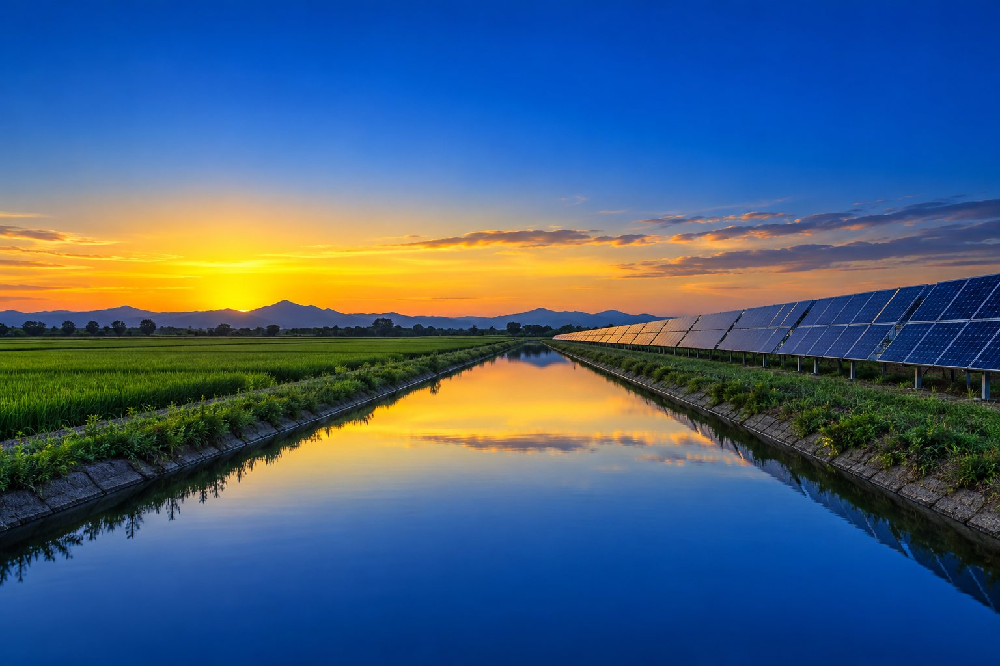
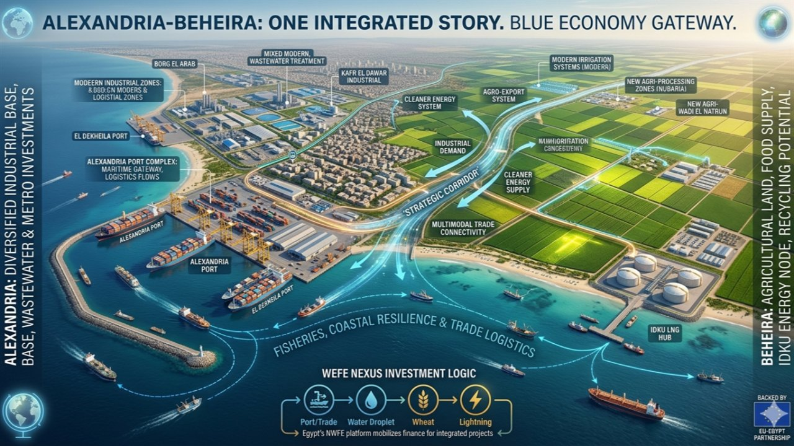
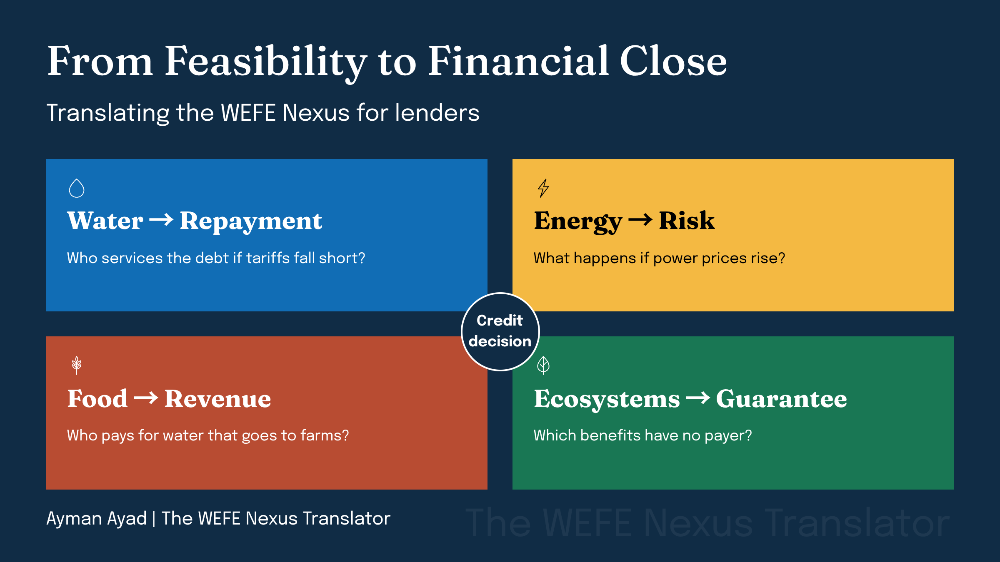
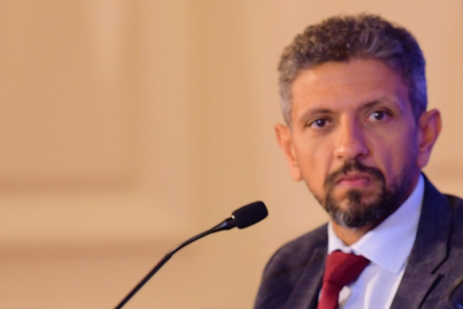
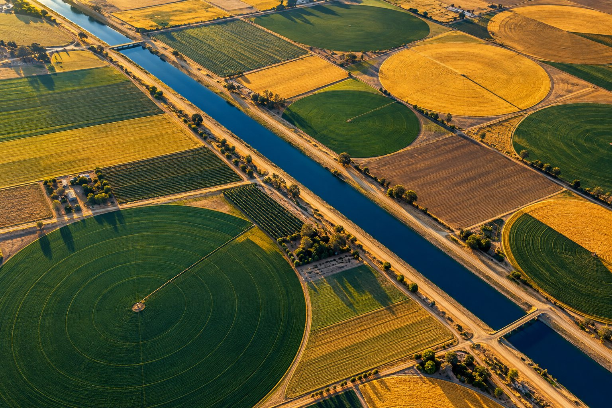
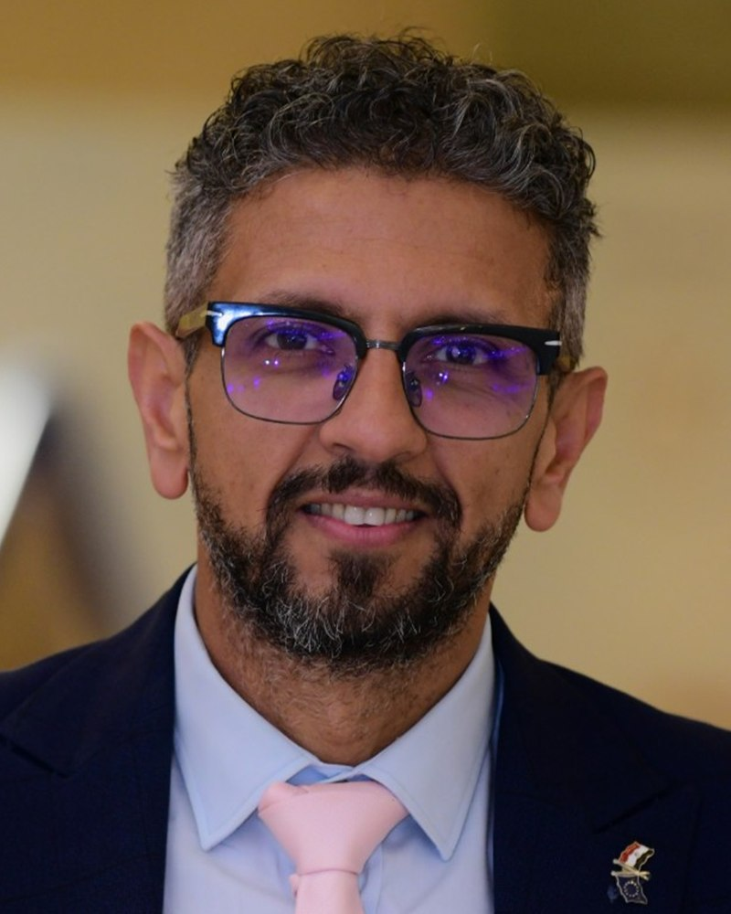
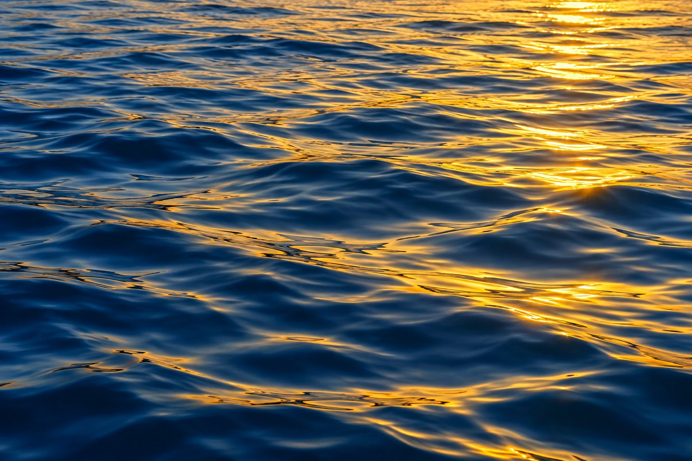

اقتصاديات المياه
التعريفات واسترداد التكاليف وبند السداد. أتتبع المال من الخدمة التي تتلقاها الأسرة أو المزرعة حتى الدين الذي ينتظر المقرض استرداده.

المياه · الطاقة · الغذاء · النظم البيئيةيربط The WEFE Nexus Translator بين المياه والطاقة والغذاء والنظم البيئية، ثم يترجم كل مشروع إلى اللغة التي تستخدمها الوزارات والمقرضون وفرق المشروعات لاتخاذ القرار وتوفير التمويل.
مجانًا كيف ينتقل مشروع المياه من الفكرة إلى الإغلاق المالي، مرحلةً بعد مرحلة. مجانًا في بريدك كل يوم اثنين، باللغة الإنجليزية. اشترك ←
طالما قُرئت الإسكندرية من خلال مينائها. يقرؤها هذا العدد من خلال المياه، ويُبيّن لماذا أصبح ذلك استراتيجية اقتصادية.
الأمن المائي
أربع ترجمات يحتاجها المقرض: المياه إلى سداد، والطاقة إلى مخاطر، والغذاء إلى إيرادات، والنظم البيئية إلى ضمانات.
تمويل البنية التحتيةالتعريفات واسترداد التكاليف وبند السداد. أتتبع المال من الخدمة التي تتلقاها الأسرة أو المزرعة حتى الدين الذي ينتظر المقرض استرداده.

حوارات مصممة لتنتهي بقرار: سؤال واضح، والأشخاص القادرون على الإجابة عنه، وخطوة تالية مكتوبة باسم مسؤول وموعد محدد.

قراءات قصيرة موثقة المصادر لما يغيّره تقرير أو تصنيف أو إعلان جديد في مشروعك أو محفظتك أو مفاوضتك القادمة.
من الفكرة إلى التنفيذ: بوابات مراحل، وسجلات مخاطر، وتقارير يستطيع مجلس الإدارة أن يبني عليها قراره، حتى تتحول الأولوية إلى مشروع له بند في الموازنة.
كل مشروع يمس الأنظمة الأربعة. قبل أي اجتماع حول التمويل، أطرح سؤالًا واحدًا لكل نظام، ثم أحمل الإجابات إلى القرار في المنتصف.
ما قيد الخدمة أو المورد؟
ما حجم الطلب، ومن يدفع؟
أي المستخدمين أو احتياجات الإنتاج؟
أي التدفقات أو الجودة أو الموائل؟
برامج واستثمارات مختارة قدتُها أو أدرتُها في قطاعات المياه والصرف الصحي والصرف الزراعي. يفتح كل رابط الصفحة الرسمية للجهة الممولة أو الشريك الحكومي في نافذة جديدة، وأغلبها باللغة الإنجليزية.
طاولة صغيرة، وسؤال واحد، وخطوة تالية مكتوبة تحدد من يتصرف ومتى.
يختبر المصرفيون والمشغلون المشروع أمام أسئلة الائتمان قبل وصوله إلى لجنة الإقراض.
صفحتان قبل الاجتماع: ما المطروح، والخيارات المتاحة، والمطلوب.

أكتب The WEFE Nexus Translator، وهي نشرة تحوّل أسئلة المياه والطاقة والغذاء والنظم البيئية إلى اللغة التي تستخدمها جهات الإقراض والوزارات وفرق المشروعات لاتخاذ القرار.
يقع عملي حيث تلتقي البنية التحتية للمياه والخدمات الاجتماعية بالتمويل. أترجم بين المهندسين الذين يصممون المشروع، والمسؤولين الذين يملكونه، والمصرفيين الذين عليهم أن يقولوا نعم.
كل ما هنا تحليل مستقل باسمي الشخصي.

أخبرني أين يقف المشروع وما القرار التالي، وسأخبرك بالأسئلة التي يجب الإجابة عنها أولًا.
اختر موعدًا مدته 30 دقيقة. أؤكد كل طلب عبر البريد الإلكتروني، ثم يصلك رابط Google Meet.